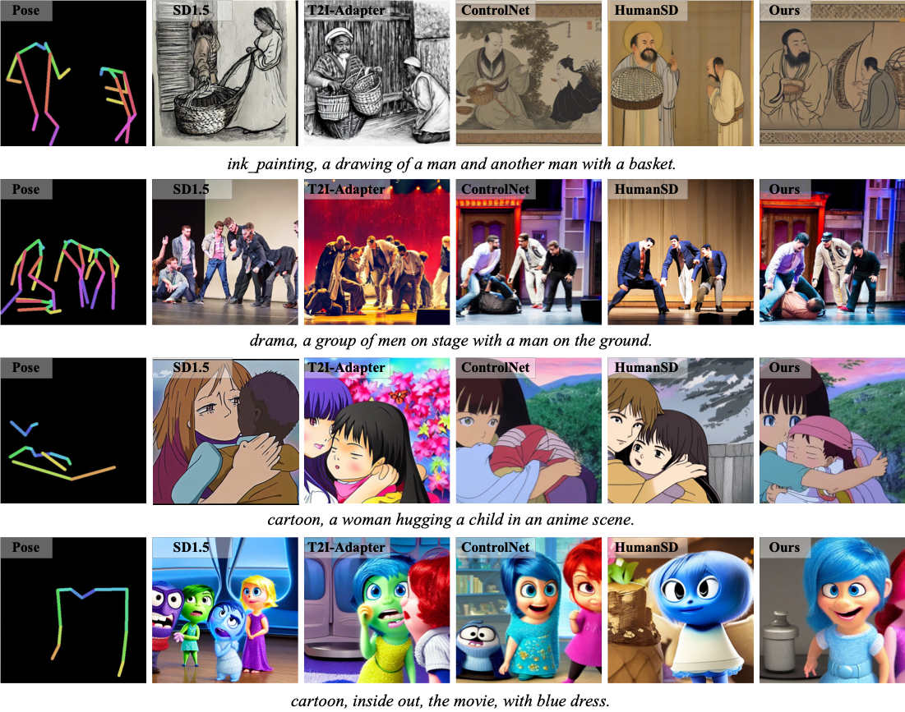

ChronoTailor generates temporally consistent videos with fine-grained garment details. Visual comparisons with state-of-the-art methods showcase our framework's superiority in preserving fabric textures and motion continuity.
Abstract
Video virtual try-on aims to seamlessly replace the clothing of a person in a source video with a target garment. Despite significant progress in this field, existing approaches still struggle to maintain continuity and reproduce garment details.
In this paper, we introduce ChronoTailor, a diffusion-based framework that generates temporally consistent videos while preserving fine-grained garment details. By employing a precise spatio-temporal attention mechanism to guide the integration of fine-grained garment features, ChronoTailor achieves robust try-on performance.
First, ChronoTailor leverages region-aware spatial guidance to steer the evolution of spatial attention and employs an attention-driven temporal feature fusion mechanism to generate more continuous temporal features. This dual approach not only enables fine-grained local editing but also effectively mitigates artifacts arising from video dynamics.
Second, ChronoTailor integrates multi-scale garment features to preserve low-level visual details and incorporates a garment-pose feature alignment to ensure temporal continuity during dynamic motion. Additionally, we collect StyleDress, a new dataset featuring intricate garments, varied environments, and diverse poses, offering advantages over existing public datasets, and will be publicly available for research. Extensive experiments show that ChronoTailor maintains spatio-temporal continuity and preserves garment details during motion, significantly outperforming previous methods.
Overview of ChronoTailor
Our aim is to generate high-quality video virtual try-on results with fine-grained garment details and temporal consistency.
Our proposed ChronoTailor consists of three main components: Diffusion Pipeline, Spatio-Temporal Attention Adapter, and Garment-Pose Alignment Module.
Within the entire framework, the Spatio-Temporal Attention Adapter encodes garment and pose conditions into a unified feature space, integrating them through a hierarchical attention mechanism.
At each diffusion step, the encoded features and temporal context are fed into the Progressive Attention Integrator (PAI) to capture both spatial relationships of garment parts and temporal dynamics across frames. This process fine-tunes the diffusion model to generate try-on results that align with target garments and maintain motion continuity.
Additionally, the garment-pose alignment module uses a pre-trained pose estimation network to ensure that the generated clothing moves naturally with the human body during dynamic actions.
Overview of ChronoTailor. It consists of Diffusion Pipeline, Spatio-Temporal Attention Adapter, and Garment-Pose Alignment Module.
The adapter uses a coupling structure with Progressive Attention Integrator (PAI) to capture spatial-temporal relationships of garment features. The alignment module regularizes pose consistency in the feature space.
Details of Progressive Attention Integrator (PAI). Garment features \( F_g \) and pose-aware temporal features \( F_t \) are fused through multi-head attention, where spatio-temporal graphs are constructed to model both local details and frame-to-frame dependencies.
Visualization of Methods

Visual comparison with state-of-the-art methods. Samples from the StyleDress dataset show ChronoTailor's superiority in garment texture preservation and pose alignment compared to ControlNet, VideoTryOn, and T2I-Adapter.
Temporal consistency evaluation. Our method maintains smooth clothing motion during jumping and walking actions, while other methods exhibit flickering or shape distortion.
Fine-grained garment details. ChronoTailor reproduces intricate patterns, folds, and fabric textures, as shown in close-up comparisons with baseline models.
Quantitative Results
Results on StyleDress and public datasets. The best results and the second best results are marked in green and blue respectively. ChronoTailor achieves significant improvements in PSNR, SSIM, and pose alignment metrics.
BibTeX
@article{wang2025chronotailor,
title={ChronoTailor: Harnessing Attention Guidance for Fine-Grained Video Virtual Try-On},
author={Wang, Jinjuan and Sun, Wenzhang and Li, Ming and Zheng, Yun and Li, Fanyao and Tao, Zhulin and Di, Donglin and Li, Hao and Chen, Wei and Huang, Xianglin},
journal={arXiv preprint arXiv:2506.05858},
year={2025}
}
}